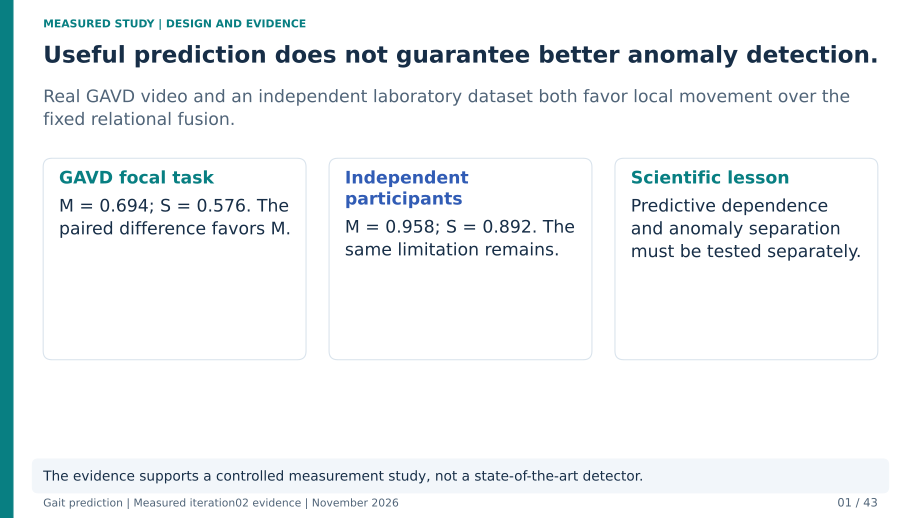
Slide 1: explanation and evidence
MEASURED STUDY | DESIGN AND EVIDENCE
S is the fixed average of local movement M and calibrated relational evidence R. These are within-fold pair-count-weighted AUROCs. The independent experiment refits on laboratory angles and is not a transfer of GAVD weights. The negative fusion outcome is retained.
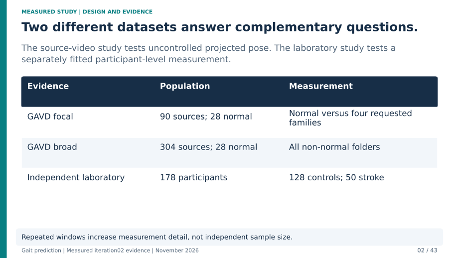
Slide 2: explanation and evidence
MEASURED STUDY | DESIGN AND EVIDENCE
GAVD source IDs are not verified unique people. The laboratory cohort contains distinct participant IDs. Never pool the two datasets or compare their absolute AUROCs as an effect of sensor quality.
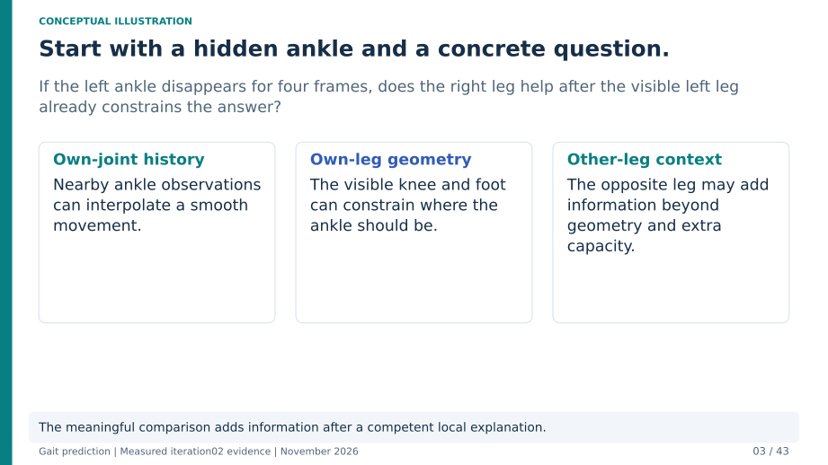
Slide 3: explanation and evidence
CONCEPTUAL ILLUSTRATION
This is an illustration of conditional prediction, not a clinical example or an empirical finding. All branches predict the identical coordinate target under the same declared body reference.
Neurological evidence and novelty advice · Executed protocol
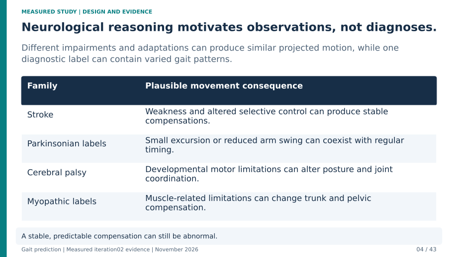
Slide 4: explanation and evidence
MEASURED STUDY | DESIGN AND EVIDENCE
These are physiology-informed hypotheses supported by the linked primary studies, not diagnoses inferred from GAVD. Medication, lesion location, strength, EMG and forces are unavailable. Myopathy is not one central neurological lesion.
Neurological evidence and novelty advice · Stroke coordination and temporal symmetry · PD arm amplitude, symmetry and coordination · Selective motor control and gait in CP · Longitudinal Duchenne muscle and gait observations
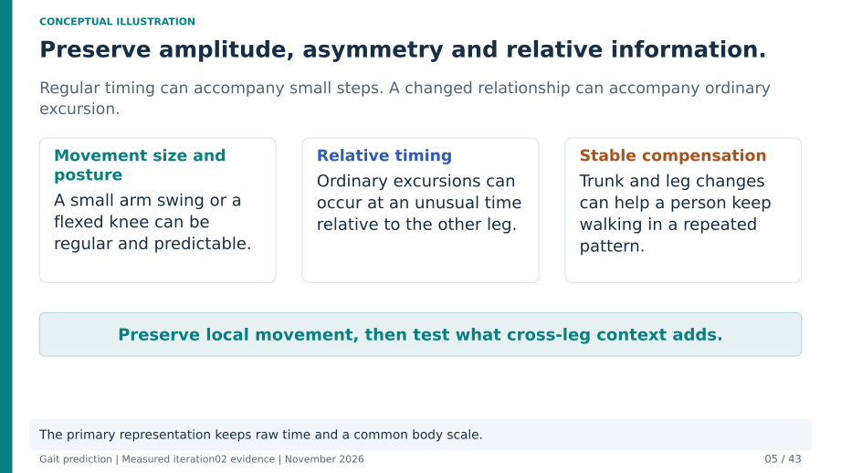
Slide 5: explanation and evidence
CONCEPTUAL ILLUSTRATION
Illustrative patterns explain why a local channel and a relational channel need separate evaluation. Independent phase normalization could erase bilateral timing differences; per-limb amplitude normalization could erase a phenotype.
Neurological evidence and novelty advice · Executed protocol
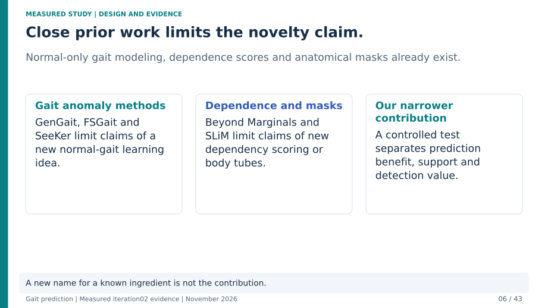
Slide 6: explanation and evidence
MEASURED STUDY | DESIGN AND EVIDENCE
The manuscript should credit the closest primary work and avoid a novel-neural-world-model claim. The possible contribution is the experimental distinction and falsification controls, especially its independent participant replication.
GenGait author manuscript · FSGait · SeeKer · Beyond Marginals · SLiM current author manuscript · Neurological evidence and novelty advice
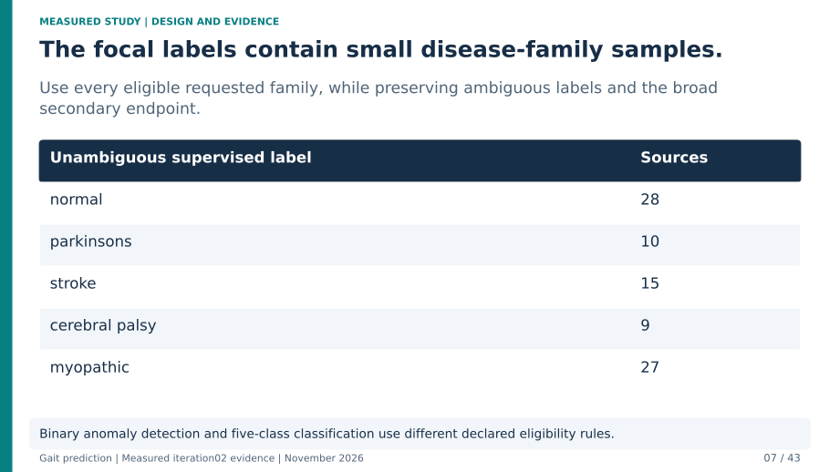
Slide 7: explanation and evidence
MEASURED STUDY | DESIGN AND EVIDENCE
The supervised five-class total is 89. The focal binary total is 90; one focal source has ambiguous condition membership and is excluded from five-class classification. The full inventory has 348 source IDs and 347 known recording groups. The duplicate pair fails primary quality criteria, so the retained 304 IDs represent 304 known recording groups.
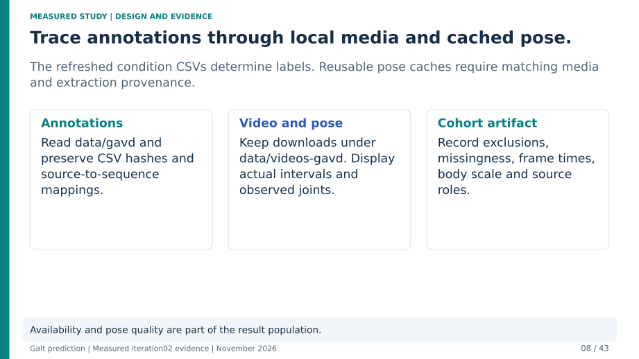
Slide 8: explanation and evidence
MEASURED STUDY | DESIGN AND EVIDENCE
The notebooks reload current CSVs and assert agreement with the saved manifest. Local source previews remain under data/videos-gavd. Invalid coordinates stay missing; a visually plausible pose can still track the wrong person.
Read-only data and ingestion review · Executed protocol · Independent notebooks 12–17
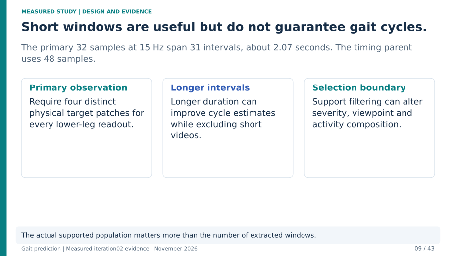
Slide 9: explanation and evidence
MEASURED STUDY | DESIGN AND EVIDENCE
Repeated masks and overlapping windows cannot create new physical target support. The earlier read-only 96-frame candidate analysis retained only 12 normal sources and was not a model result. Validated normal contact-event phase scores are unavailable.
Executed protocol · Read-only data and ingestion review · Confidence filtering and selection shift
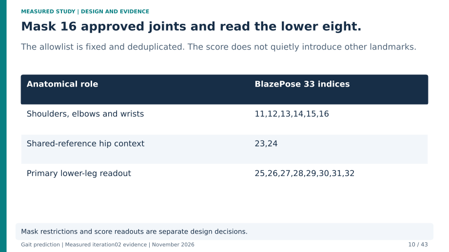
Slide 10: explanation and evidence
MEASURED STUDY | DESIGN AND EVIDENCE
The notebooks include every keypoint in numerical order with its name and feature role. The shared normalization reference Q already uses body measurements. Conditional information-access claims must acknowledge Q.
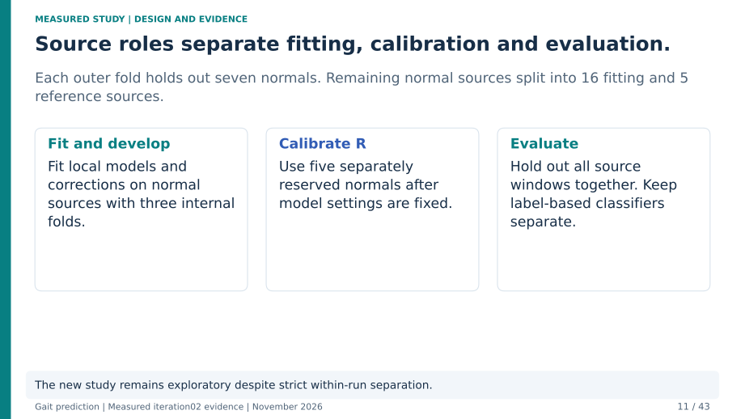
Slide 11: explanation and evidence
MEASURED STUDY | DESIGN AND EVIDENCE
All 28 normal sources had earlier exploratory use. New folds do not create independent confirmation. Unknown repeated identities across different videos remain unresolved. The standalone laboratory dataset strengthens a separate measurement test.
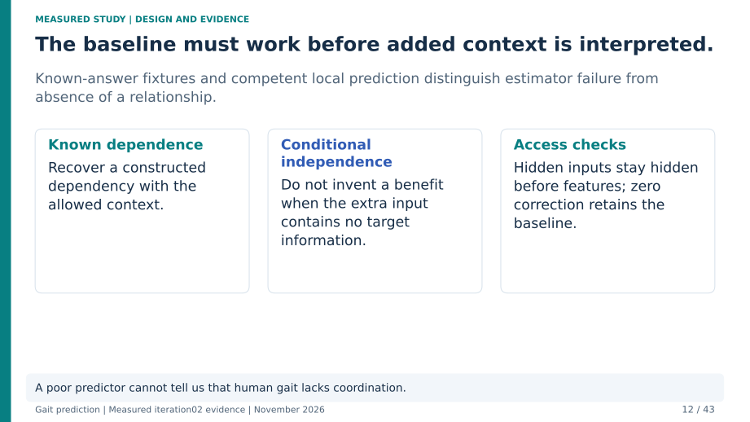
Slide 12: explanation and evidence
MEASURED STUDY | DESIGN AND EVIDENCE
Software fixtures are explicitly synthetic checks, not gait efficacy. The real experiment then requires normal-development adequacy. A failed relational gate sets R=0 and retains the fold.
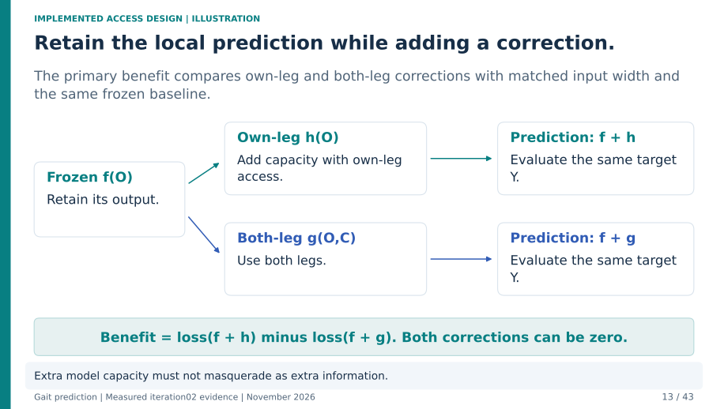
Slide 13: explanation and evidence
IMPLEMENTED ACCESS DESIGN | ILLUSTRATION
The diagram shows the primary own-capacity and both-leg comparison explicitly. The benefit is loss(f+h) minus loss(f+g). Both branches retain the same frozen f, predict the same target Y and can choose zero correction. The restriction is conditional on the shared body reference Q. Equal coefficient dimensions do not establish equal effective capacity, rank or inductive bias.
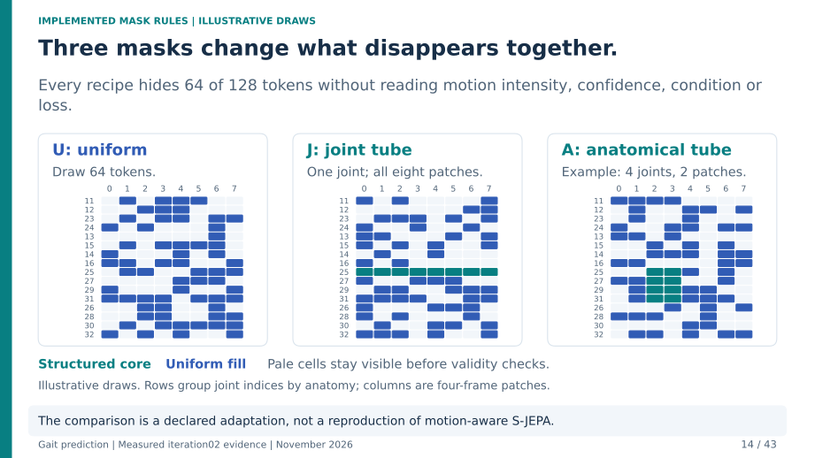
Slide 14: explanation and evidence
IMPLEMENTED MASK RULES | ILLUSTRATIVE DRAWS
U is uniform. J selects one joint uniformly and removes all eight temporal patches, then fills 56 tokens. A selects an anatomical group with probability equal to width divided by 16, removes an aligned eight-token core, then fills 56 tokens. These example draws illustrate the implemented rule and are not model outputs.
Controlled masking methods review · MAMP primary paper · Skeleton S-JEPA primary paper · SLiM current author manuscript · Executed protocol
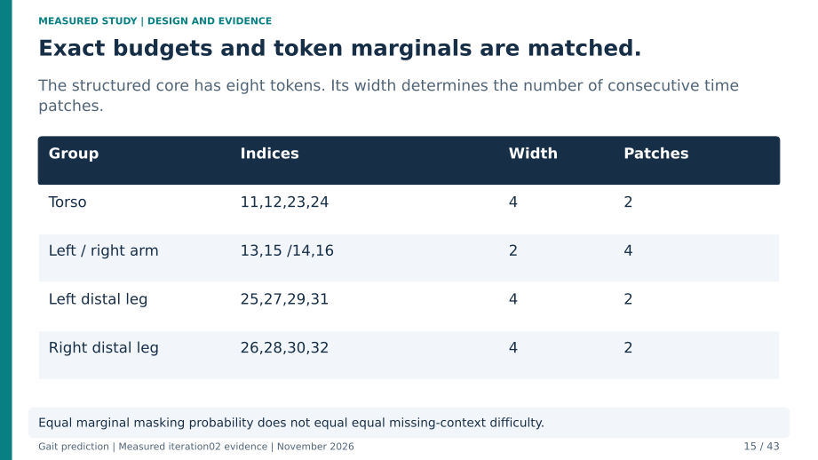
Slide 15: explanation and evidence
MEASURED STUDY | DESIGN AND EVIDENCE
For every token, P(core)=1/16 and P(hidden)=1/16+(15/16)*(56/120)=1/2. This matches first-order probabilities, not difficulty or valid-target exposure. Starts are 0, 2, 4 and 6 for four-joint groups, and 0 or 4 for two-joint groups. No block wraps.
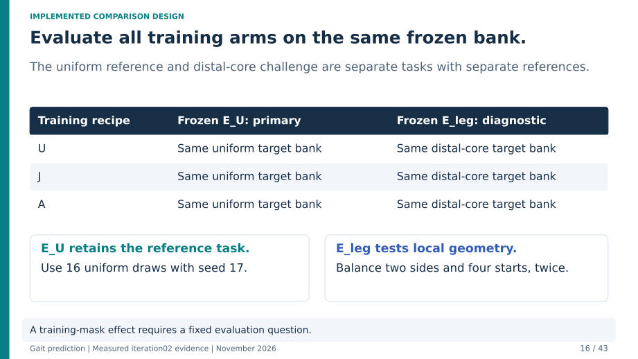
Slide 16: explanation and evidence
IMPLEMENTED COMPARISON DESIGN
The uniform reference has 16 masks with seed 17. The distal-leg bank balances two sides and four starts twice, with seed 117. Each mask hides 64 tokens, while the diagnostic scores only its eight core targets. Compare training policies within one bank, never native task against native task.
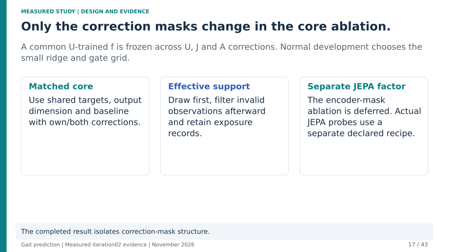
Slide 17: explanation and evidence
MEASURED STUDY | DESIGN AND EVIDENCE
The completed coordinate comparison does not establish the best JEPA mask. VICReg discourages collapse; it does not separate disease categories by itself. Encoder-mask ablation, stochastic positional embeddings and stochastic latent variables remain deferred. Dedicated mask random streams preserve other sampling choices.
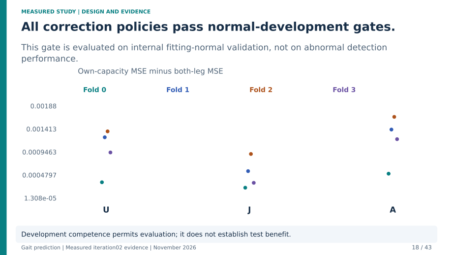
Slide 18: explanation and evidence
MEASURED STUDY | DESIGN AND EVIDENCE
Every outer-fold and policy combination meets the operational two-of-three internal-fold rule against both the baseline and own-capacity correction. Points show the mean internal validation benefit after selection. These are development checks, not independent test evidence.
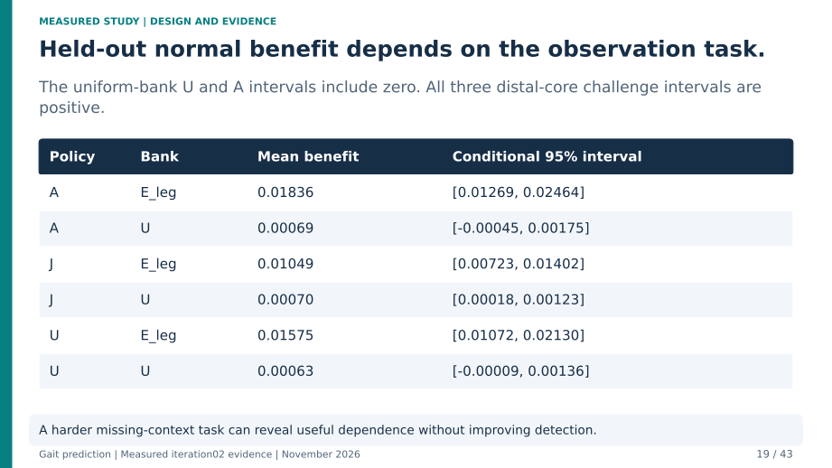
Slide 19: explanation and evidence
MEASURED STUDY | DESIGN AND EVIDENCE
All 28 outer-test normal sources enter each result. Benefit is own-capacity loss minus both-leg loss after the declared hierarchical aggregation. The diagnostic bank removes more local geometry and reveals a different prediction task. It cannot establish an improvement on the uniform reference.
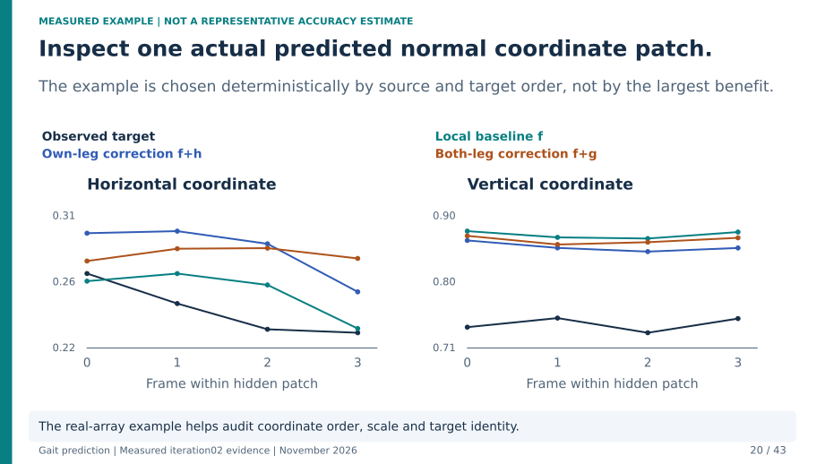
Slide 20: explanation and evidence
MEASURED EXAMPLE | NOT A REPRESENTATIVE ACCURACY ESTIMATE
Actual saved source 3KnFt8bH3tE, sequence cljo2wwu7001a3n6ljmqm39l6, joint 25, patch 1. Notebook 13 displays the corresponding video and raw pose overlay. Every line uses the same observed target. This is an example for auditing coordinates, not a representative accuracy estimate.
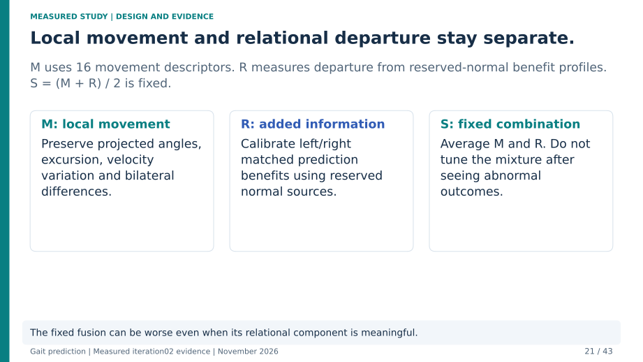
Slide 21: explanation and evidence
MEASURED STUDY | DESIGN AND EVIDENCE
M excludes local prediction error. Its imputation, scale and covariance use fitting normals. R uses separately reserved normals after model selection. Stable compensations can increase or decrease predictive benefit, so R uses a two-sided reference. A reference of only five sources remains fragile.
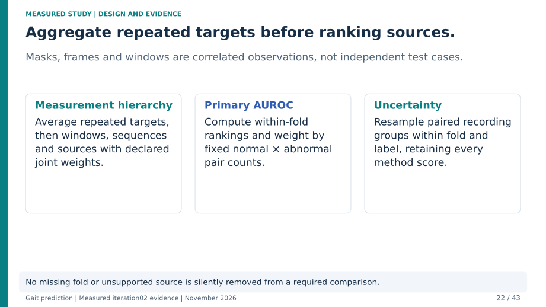
Slide 22: explanation and evidence
MEASURED STUDY | DESIGN AND EVIDENCE
Intervals condition on the fitted models, selected protocol and original fold weights. They do not include training-seed variation or unknown repeated-person dependence. Average precision is reported per fold with prevalence. A pooled score plot is descriptive and does not replace the primary AUROC.
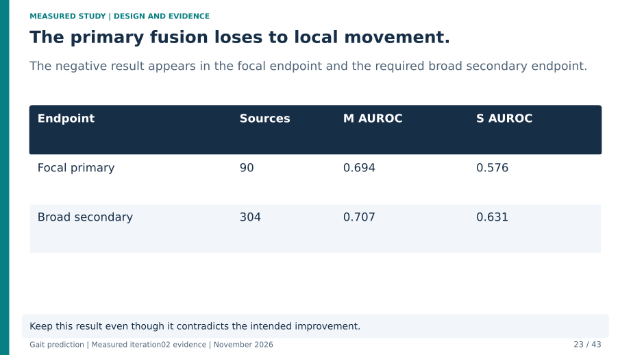
Slide 23: explanation and evidence
MEASURED STUDY | DESIGN AND EVIDENCE
The focal endpoint was selected for the new exploratory iteration after reviewing earlier broadresults. It must not be described as preregistered independent confirmation. Both endpoints use exactly the same frozen source scores.
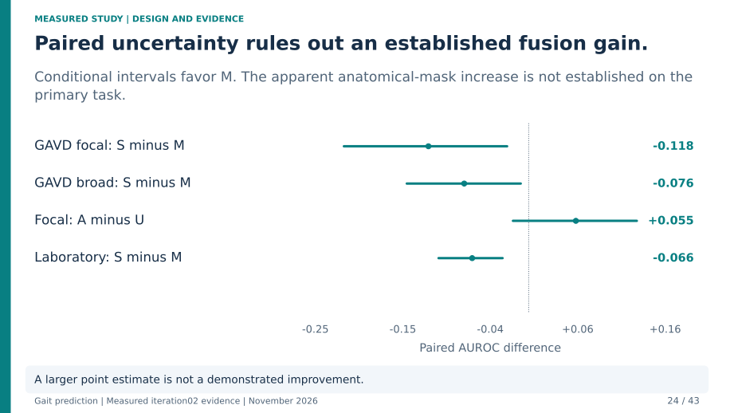
Slide 24: explanation and evidence
MEASURED STUDY | DESIGN AND EVIDENCE
Intervals use 1,000 paired bootstrap resamples with fixed original fold weights. The mask-policy contrast compares S under the same uniform evaluation bank. An interval crossing zero does not establish equivalence or improvement.
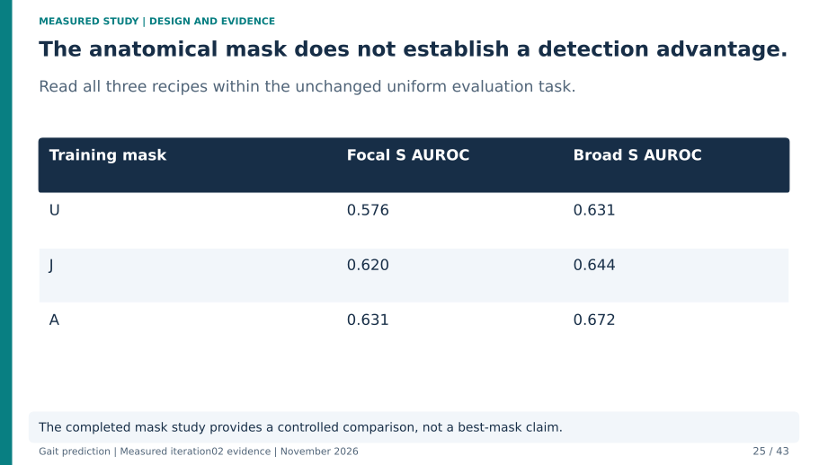
Slide 25: explanation and evidence
MEASURED STUDY | DESIGN AND EVIDENCE
The A-minus-U focal difference is positive, but its conditional 95% interval crosses zero. A-minus-J and J-minus-U intervals also cross zero. All arms remain in the record; A is not selected as a new primary method after evaluation.
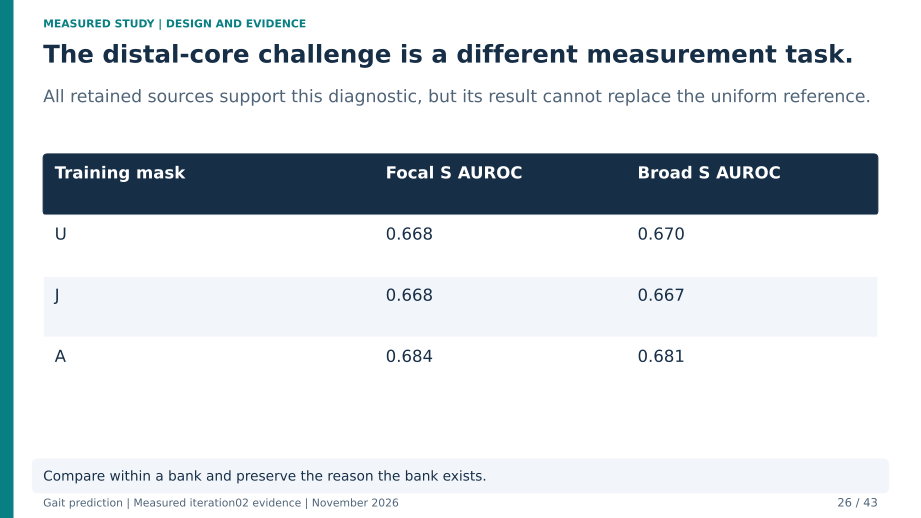
Slide 26: explanation and evidence
MEASURED STUDY | DESIGN AND EVIDENCE
Each bank has its own relational reference, fitted using the same reserved source identities. Greater normal prediction benefit on the distal-leg bank does not imply better detection. The bank is a declared diagnostic with different targets.
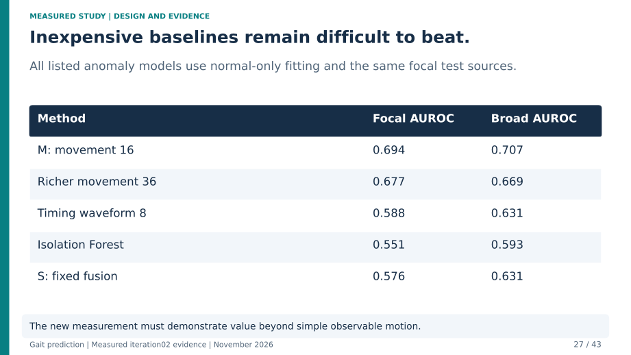
Slide 27: explanation and evidence
MEASURED STUDY | DESIGN AND EVIDENCE
Timing8 is a waveform descriptor, not the phase coordination index or a validated physiological phase estimate. Nuisance, sham, constituent-error and calibrated-error comparisons remain in the complete metrics. The strongest local baseline must stay visible.
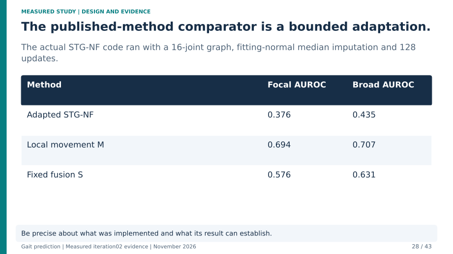
Slide 28: explanation and evidence
MEASURED STUDY | DESIGN AND EVIDENCE
The upstream revision and adaptation are recorded. This is not a faithful reproduction of a published benchmark. The weak result from a bounded implementation cannot justify a state-of-the-art claim. All four folds completed on matched coverage.
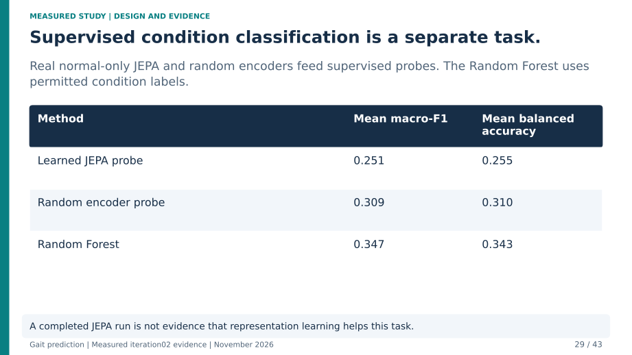
Slide 29: explanation and evidence
MEASURED STUDY | DESIGN AND EVIDENCE
Fresh JEPA and random backbones use the same source folds. JEPA has 512 updates per fold and VICReg regularization. The table contains means of four held-out fold metrics, not clinical confidence intervals. Five-class evaluation contains 89 unambiguous sources. The learned representation does not improve this bounded comparison.
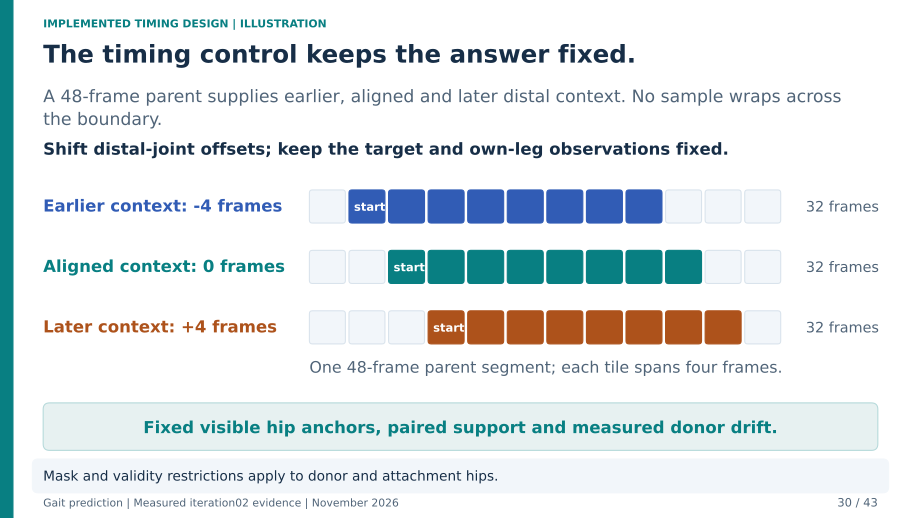
Slide 30: explanation and evidence
IMPLEMENTED TIMING DESIGN | ILLUSTRATION
The target and own-leg window is frames 8:40, with donor intervals 4:36 and 12:44. Subtract the permitted donor hip and attach the offset to the permitted original opposite hip. Keep the common body reference and paired support fixed. This edits distal timing and geometry, not an isolated physiological phase.
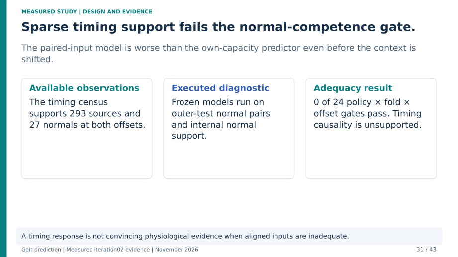
Slide 31: explanation and evidence
MEASURED STUDY | DESIGN AND EVIDENCE
The core uniform-bank gate and the exact paired-support gate ask different questions. Sparse paired support leaves about 1.75 permitted distal tokens per target. The operational two-of-three internal-normal rule fails all 24 comparisons. Models and scores were not retuned after this result.
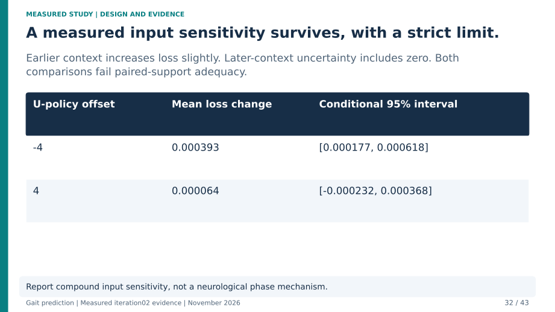
Slide 32: explanation and evidence
MEASURED STUDY | DESIGN AND EVIDENCE
There are 27 outer-test normal sources, aggregated once per offset. Zero edits produce zero differences; own-leg predictions and targets stay fixed. Noise is not matched to timing displacement. Whole-body shifts are separate controls and do not qualify as fixed-target interventions.
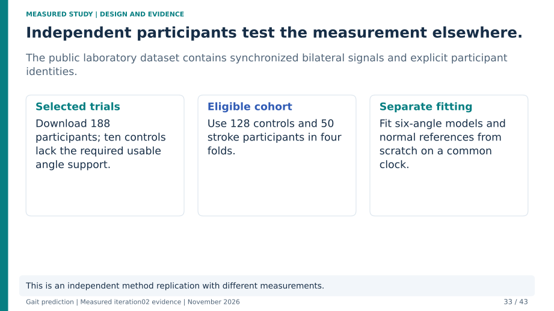
Slide 33: explanation and evidence
MEASURED STUDY | DESIGN AND EVIDENCE
Van Criekinge and colleagues released this laboratory dataset in Scientific Data in 2023. The bounded replication uses one prespecified trial per participant and six synchronized angle signals on a common clock. It is not sensor transfer, weight transfer or validation of all four condition families.
Laboratory control and stroke dataset · Independent participant replication · Executed protocol
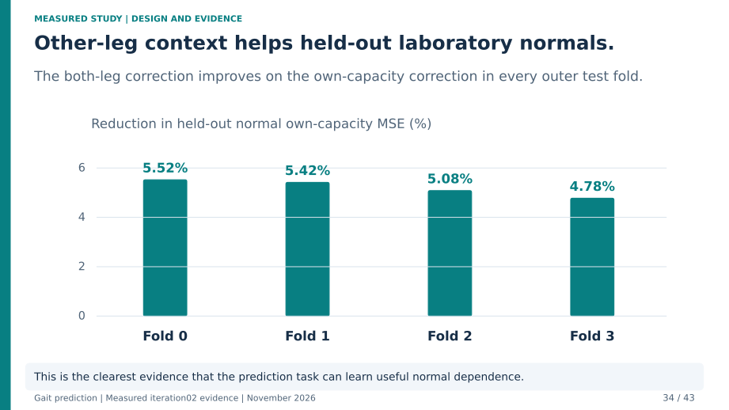
Slide 34: explanation and evidence
MEASURED STUDY | DESIGN AND EVIDENCE
Each held-out normal fold has 32 participants. Relative own-capacity error reduction ranges from 4.78% to 5.52%. The errors use laboratory angle units, not GAVD coordinate units. This measurement contains useful cross-leg predictive information.
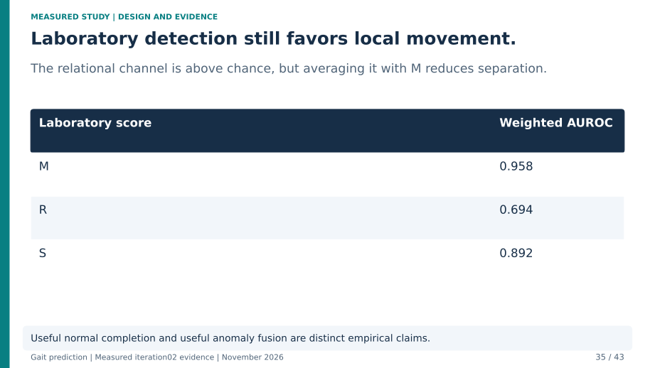
Slide 35: explanation and evidence
MEASURED STUDY | DESIGN AND EVIDENCE
S minus M is -0.0663, with conditional 95% interval [-0.1056, -0.0306]. The negative result tests one fixed measurement and fusion recipe. It does not prove that relational information can never help.
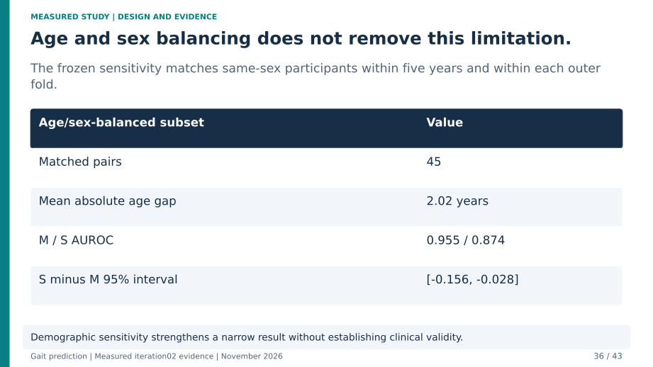
Slide 36: explanation and evidence
MEASURED STUDY | DESIGN AND EVIDENCE
The maximum-cardinality, minimum-age-gap matching rule was fixed before outcomes. It produces 45 same-sex pairs: 16 female and 29 male, with fold counts 11, 12, 11 and 11. Models are not refitted. Bootstrap resampling carries whole matched pairs within each fold. This is a balanced sensitivity analysis, not causal adjustment.
Independent participant replication · Laboratory control and stroke dataset
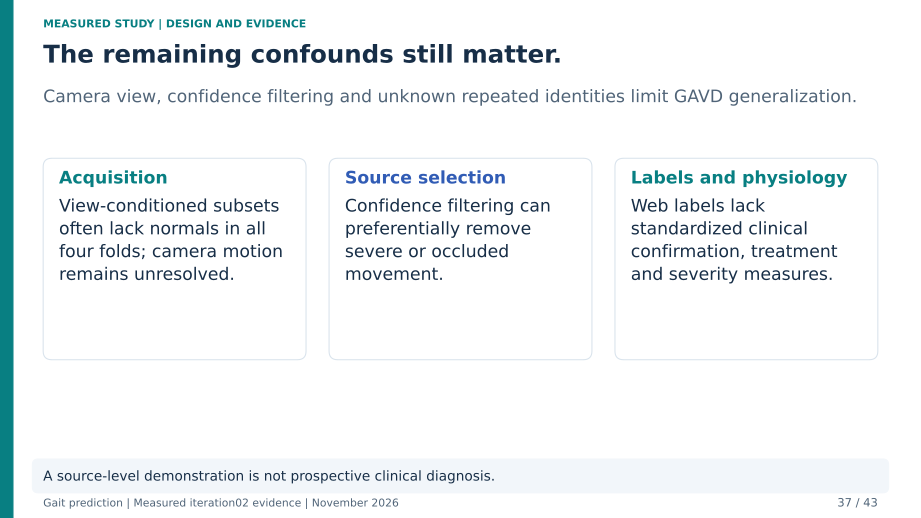
Slide 37: explanation and evidence
MEASURED STUDY | DESIGN AND EVIDENCE
Notebook 17 shows deterministic context examples and explicitly labels outcome-selected failure candidates. Individual videos do not support invented causal clinical explanations. The independent laboratory data reduce some acquisition uncertainty without validating GAVD diagnoses.
Interpretation limits · Confidence filtering and selection shift · Independent notebooks 12–17
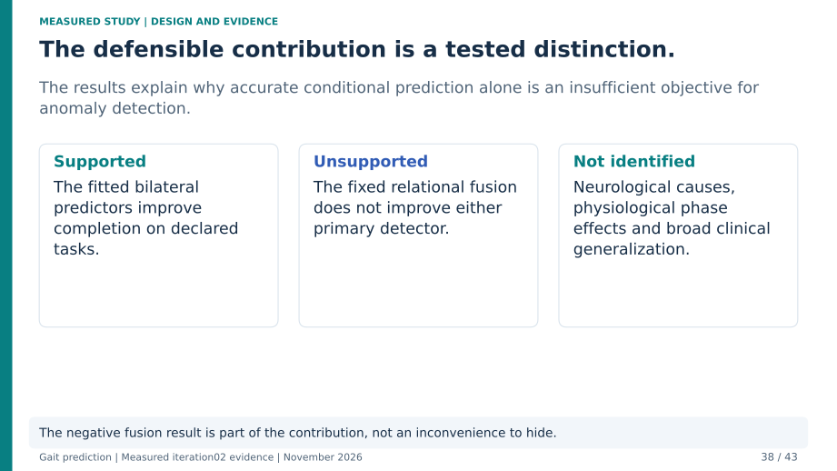
Slide 38: explanation and evidence
MEASURED STUDY | DESIGN AND EVIDENCE
The GAVD uniform-bank U normal-benefit interval itself includes zero. The clearest useful-dependence findings come from the external dataset and distal-leg diagnostic bank. Do not combine these into a stronger universal claim. The contribution rests on transparent controls and replication, not on novel model components.
Measured iteration02 results · Interpretation limits · Neurological evidence and novelty advice · Current manuscript and readiness
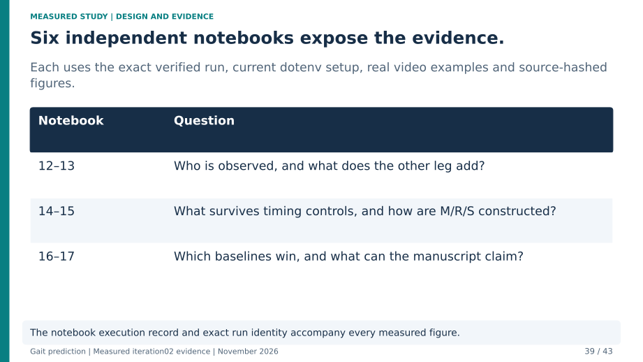
Slide 39: explanation and evidence
MEASURED STUDY | DESIGN AND EVIDENCE
Use uv with the existing project configuration and set AAAI_ITERATION02_RUN_DIR to the exact run. The execution report records independent fresh kernels. Historical notebooks 00–11 preserve scientific cells and outputs; new replay checks write isolated artifacts. Read the execution record rather than assuming a notebook has run because its file exists.
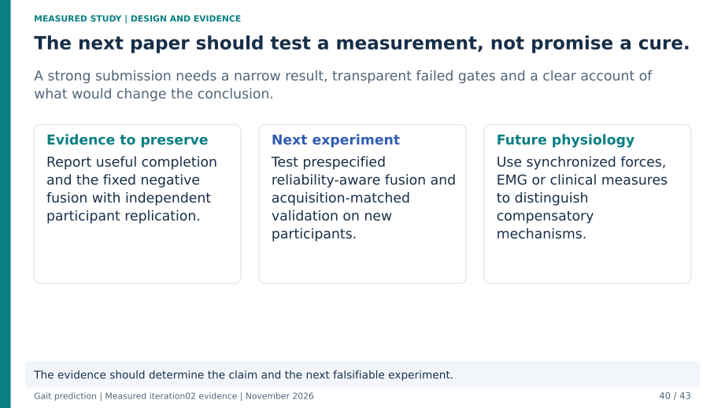
Slide 40: explanation and evidence
MEASURED STUDY | DESIGN AND EVIDENCE
Reliability-aware fusion is future work, not a replacement selected after the fixed S result. Encoder-mask ablations, stochastic positional embeddings, stochastic latent variables and multiple training seeds remain unexecuted. The manuscript, format, links and claim ledger must agree with the evidence. These scores cannot determine workshop acceptance probability.
Current manuscript and readiness · ASTAD4 official requirements · Interpretation limits
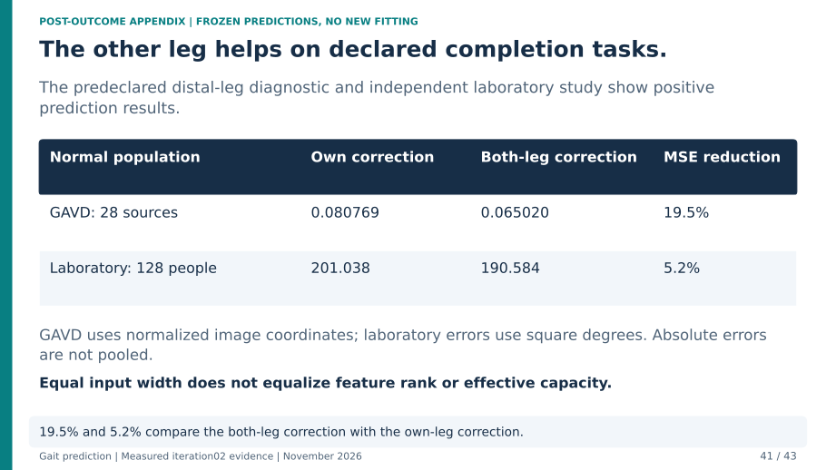
Slide 41: explanation and evidence
POST-OUTCOME APPENDIX | FROZEN PREDICTIONS, NO NEW FITTING
This appendix emphasizes completed secondary completion results after outcomes were inspected. It does not alter the primary detection endpoint, fitted models, targets or populations. Both rows compare loss(f+h) with loss(f+g), retaining the same local f. The GAVD row uses the uniform-trained reference on E_leg, not the largest gain selected across policies. Its absolute mean benefit is 0.015748, with the earlier 5,000-draw conditional interval [0.010721, 0.021300]. Percentages are differences of source or participant mean MSE divided by the comparator mean, not means of individual percentages. The observations are withheld measured poses or angles, not independent ground truth during real occlusion. The feature families and numerical ranks differ, so this is useful completion under fitted predictor families rather than isolated neural information.
Post-outcome paired completion audit · Positive completion interpretation and limits · Executed protocol
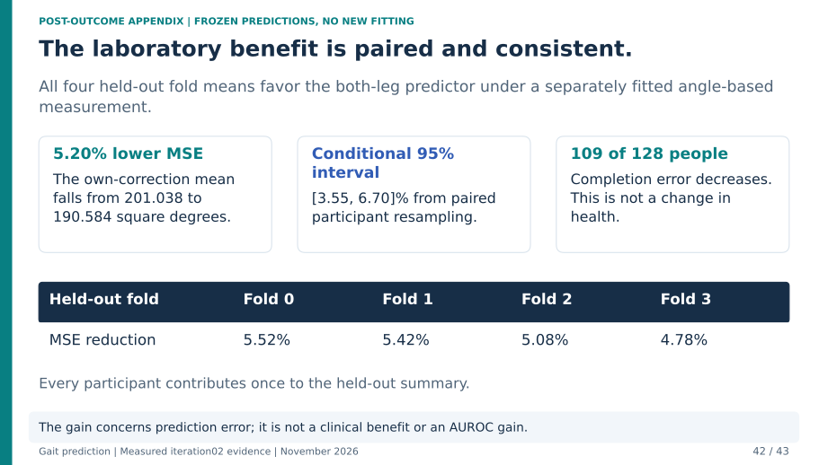
Slide 42: explanation and evidence
POST-OUTCOME APPENDIX | FROZEN PREDICTIONS, NO NEW FITTING
The post-outcome audit uses the frozen predictions for 128 healthy participants, with 32 in each original outer fold. It resamples participants jointly across compared methods within folds, fixes the original normal-count fold weights, and uses 1,000 draws with seed 42. The exact relative interval is [3.5530025847, 6.6975555170] percent. The absolute reduction is 10.454 square degrees, with conditional interval [7.154, 13.387]. Error decreases for 109 participants. Shared training data across fits mean that the four fold means are not independent replications. These intervals omit fitting, seed and protocol-selection uncertainty. The separate laboratory study is method replication, not transfer of GAVD weights or validation across all disease families.
Post-outcome paired completion audit · Positive completion interpretation and limits · Executed protocol · Independent participant replication
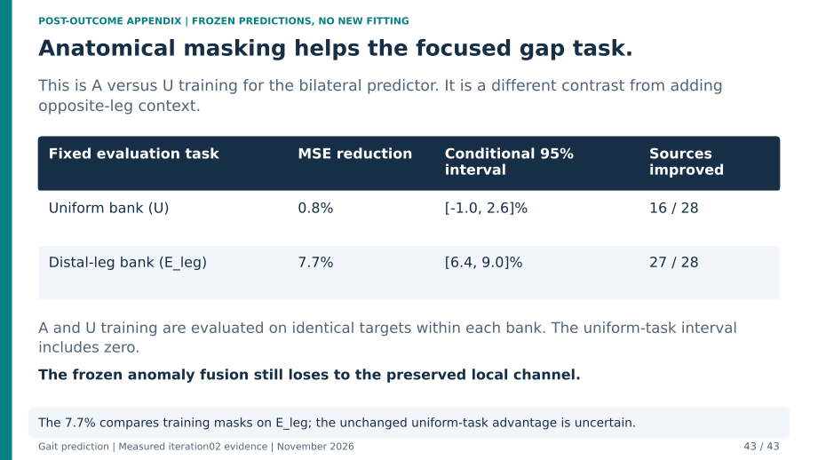
Slide 43: explanation and evidence
POST-OUTCOME APPENDIX | FROZEN PREDICTIONS, NO NEW FITTING
The paired audit checks identical normal sources, window metadata, physical target keys, mask-draw counts, evaluation mask hashes and distinct-patch support for A and U within each bank. On E_leg, MSE changes from 0.065020 to 0.060009; the relative interval is [6.3559980507, 9.0031877518] percent, with 27 of 28 sources improved and positive means in all four folds. On U, the relative interval is [-0.9546471486, 2.5838432525] percent; 16 sources improve and one fold mean is worse. The new intervals are post-outcome, unadjusted descriptive analyses of frozen outputs. They condition on training recipes, selected regularization, validity-dependent target exposure and the current sources. This supports task-specific completion specialization, not a new mask family, general mask superiority, a JEPA pretraining result or a neurological mechanism. Both banks and the negative original primary detection results remain visible.
Post-outcome paired completion audit · Positive completion interpretation and limits · Executed protocol